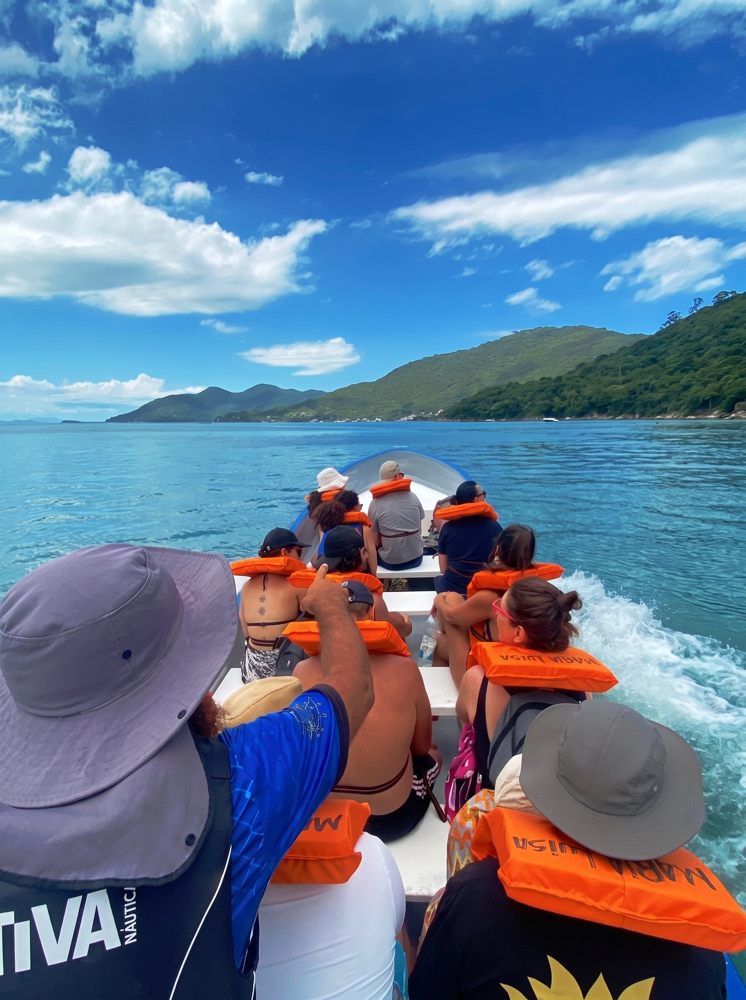
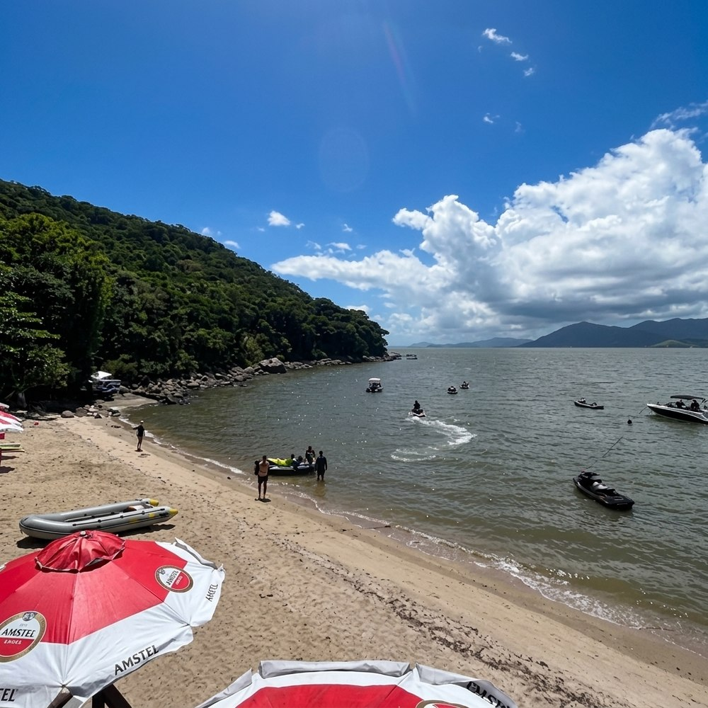
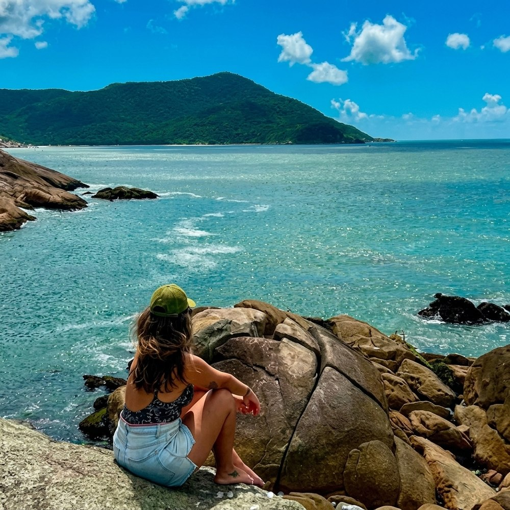

A rota, ponto a ponto.
Seis horas de navegação pelo extremo sul, contadas pelos mesmos pescadores que conhecem cada pedra dessa costa. O barco sai da praia mesmo — colete, recado rápido do piloto, e proa pro sul.

Farol dos Naufragados
Saindo da Caieira, a primeira parada é em frente ao farol, na Praia dos Naufragados. Ali o guia conta histórias da pesca da tainha e da cultura manezinha, parte viva dessa costa.

Fortaleza de Araçatuba
Navegando em mar aberto, o barco passa em frente às ruínas da fortaleza. Uma aula de história ao ar livre, sem sair do banco.

Ponta do Papagaio
Uma prainha pouco conhecida, de frente para a Ilha do Papagaio. O barco ancora por cerca de uma hora para mergulho em água cristalina, longe das praias cheias.

Praia de Pedras Altas
Passando pela Praia do Sonho e pelas fazendas de ostras, a rota chega numa praia praticamente particular, com tempo pra comer sem pressa e aproveitar o mar.

De volta à Caieira
O retorno fecha um dia de natureza, cultura, mar calmo e boa comida. Floripa de um jeito que pouca gente conhece.
* Horários aproximados da saída das 08h. Na saída das 10h, some duas horas a cada ponto.